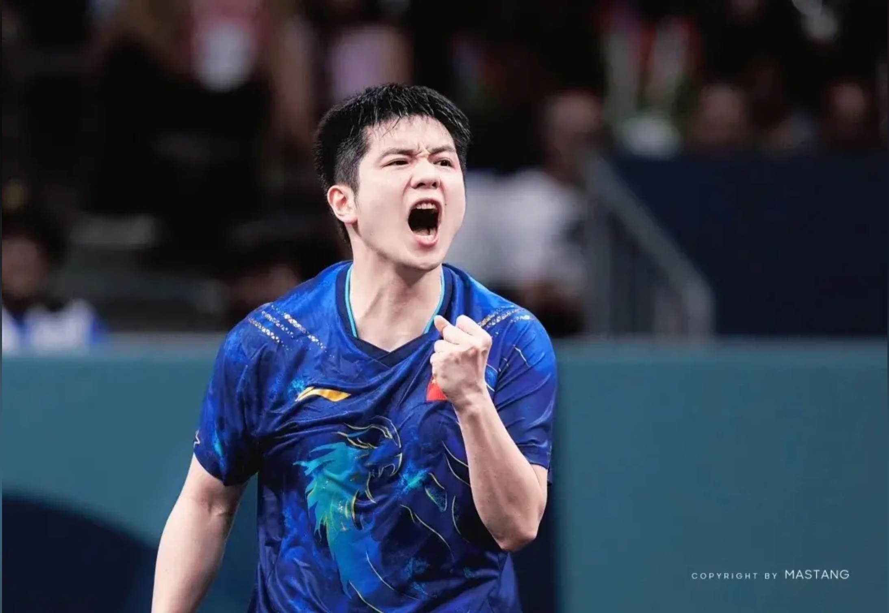
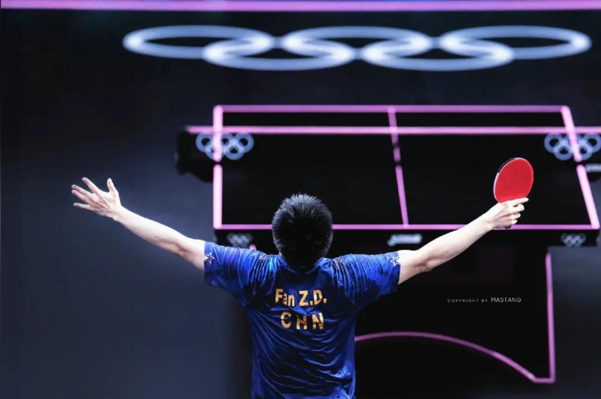
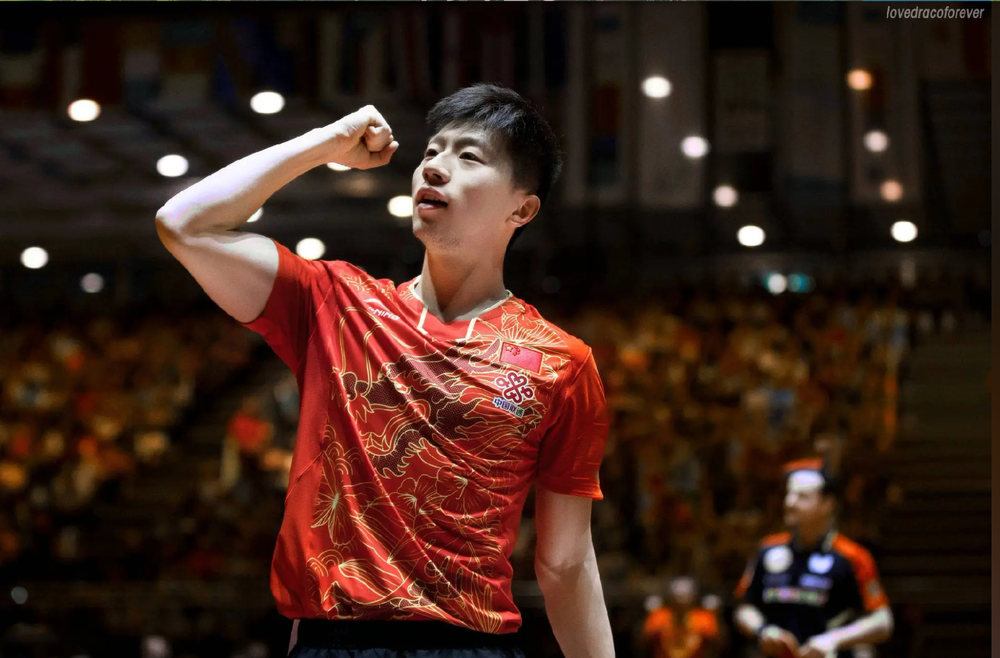
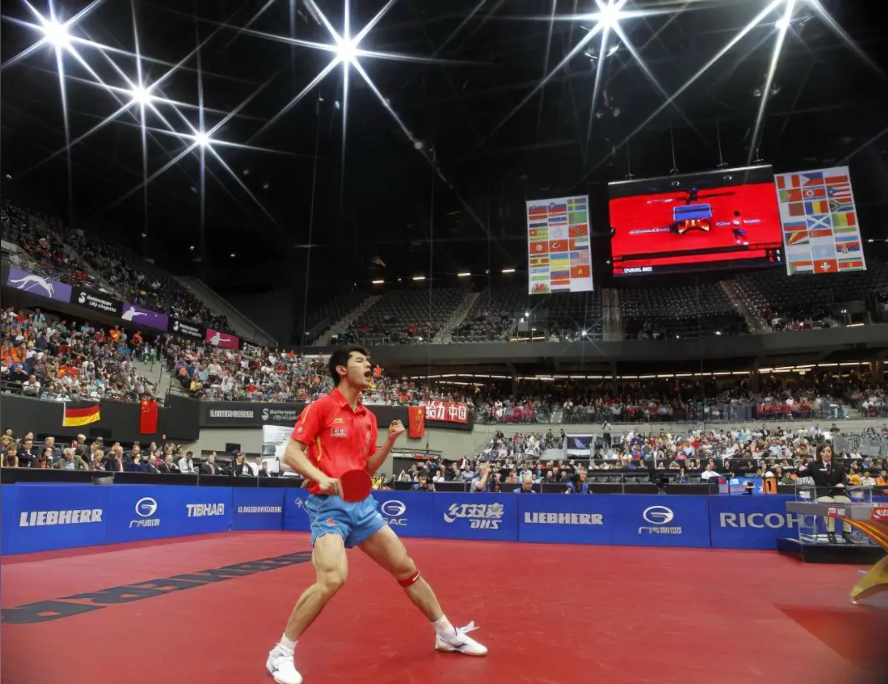
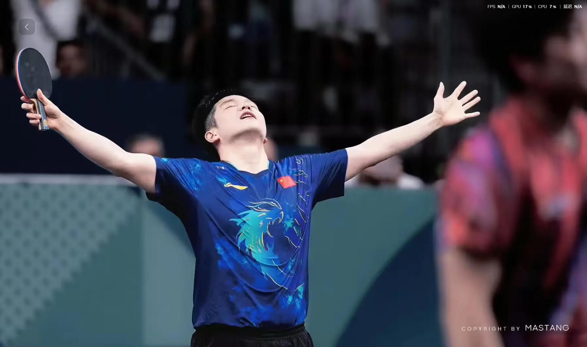
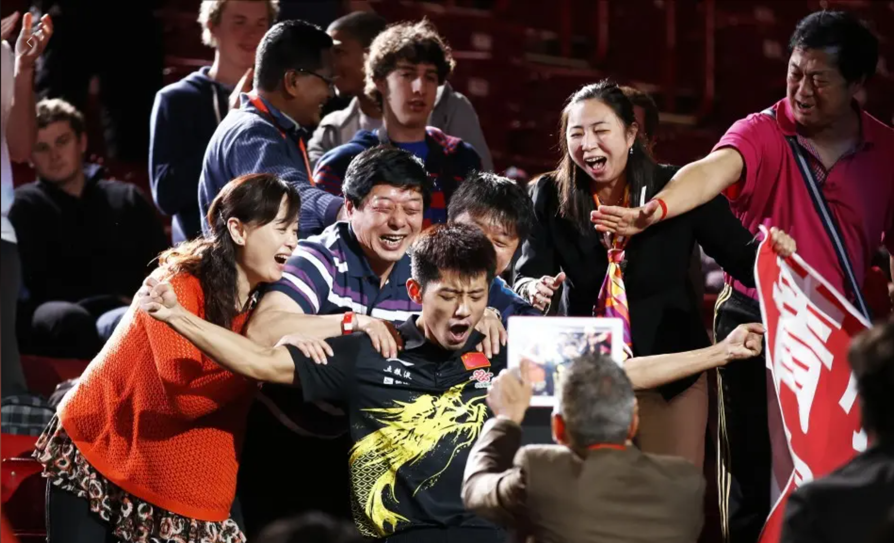
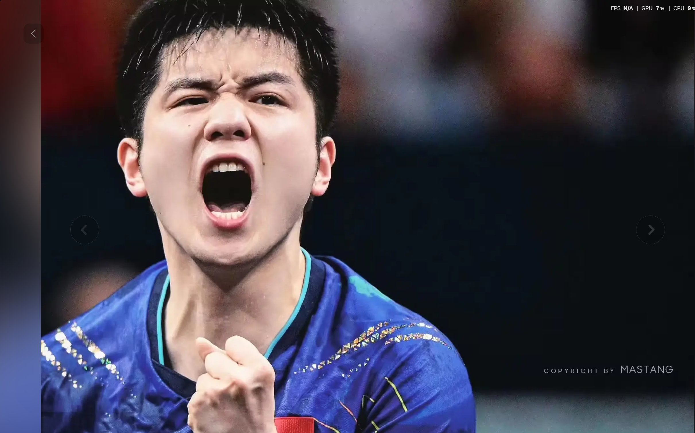
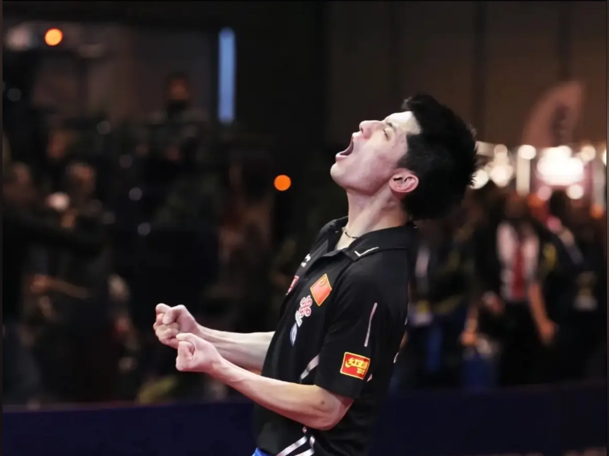

Fan Zhendong
樊振东
以厚实的正反手质量、强大的相持能力和高强度连续进攻著称。巴黎奥运周期后，他的名字已经和国乒新一代领军人物紧密相连。
Chinese Table Tennis
从速度、旋转到意志力，樊振东、马龙、张继科把国乒的不同气质写进同一张球台：新生代的冲击、时代标杆的稳定，以及大赛舞台上的锋芒。

乒乓球不是只比谁更快。它同时考验预判、节奏、线路、心理承压和临场选择。真正顶尖的球员，往往能在极短的回合里完成观察、欺骗、变化和终结。
樊振东代表着强对抗时代的厚度，正反手质量、连续进攻和相持能力都极具压迫感；马龙像一套完整体系，衔接、控制、变化和大赛处理几乎没有短板；张继科则拥有极鲜明的爆发力和舞台感，关键分里敢于把比赛推向最高风险。
这一页不做单一人物传记，而是把三位明星放在同一个叙事里：他们的照片、荣誉和比赛气质共同组成一条国乒男队的高光路线。

以厚实的正反手质量、强大的相持能力和高强度连续进攻著称。巴黎奥运周期后，他的名字已经和国乒新一代领军人物紧密相连。

男子乒坛极具代表性的全满贯球员之一，技术结构完整，阅读比赛能力出众，长期保持顶级竞争力，是稳定与全面的代名词。

大赛气质鲜明，反手拧拉和关键分爆发力令人印象深刻。他用极短时间完成大满贯，留下了锋利、直接、极具张力的时代记忆。
奥运冠军、世乒赛男单冠军、世界杯冠军。他的比赛常常像一台持续加压的机器，越到相持深处，越能体现身体质量和击球稳定性。
两届奥运男单冠军得主，也是男子乒坛最具统治力和完整性的代表人物之一。他的强大不只在进攻，更在每一板之前的选择。
奥运会、世乒赛、世界杯男单冠军得主，以极快速度完成大满贯。张继科的标志，是把大赛压力变成进攻欲望。

樊振东的强不只是力量感，而是能在高质量对拉里持续保持击球深度。他把很多看似五五开的回合，变成了自己更习惯、更能承受的节奏。

马龙最特别的地方，是他不依赖单一武器。他可以用控制建立优势，也可以用变化打乱对手，还能在关键分里找到最稳的那条线路。

张继科的比赛有一种强烈的瞬间爆发感。反手、拧拉、抢攻和庆祝动作都极具辨识度，也让他的高光时刻带着非常强的个人风格。
他的爆发把男子乒坛带入一个更具冲击感的阶段。
张继科完成奥运男单冠军的重要篇章。
技术完整性与长期积累在奥运舞台集中兑现。
延续统治力，也把“稳定”写成传奇的一部分。
新一代核心在奥运舞台完成自己的代表篇章。

Photo 03 Photo 06
Photo 07
Photo 06
Photo 07

Photo 10